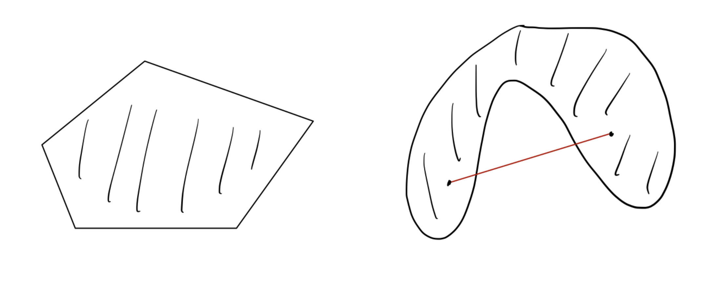
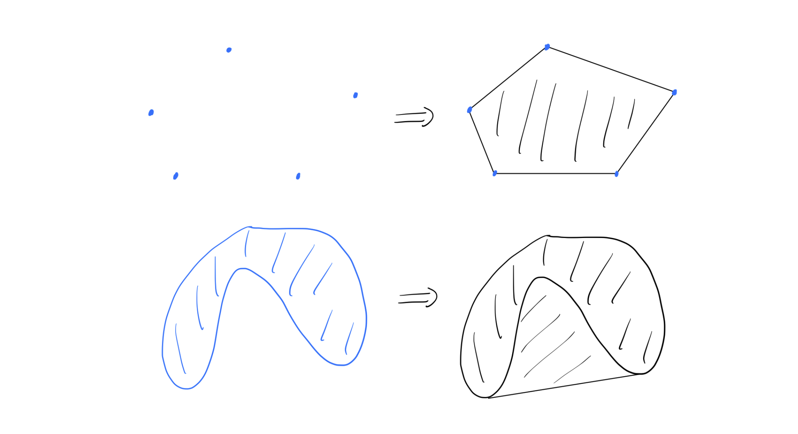
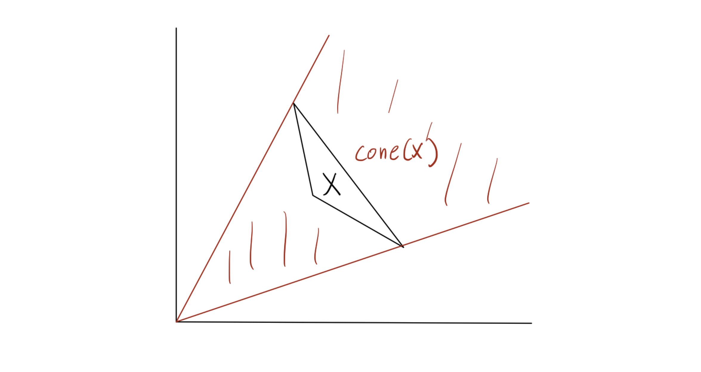
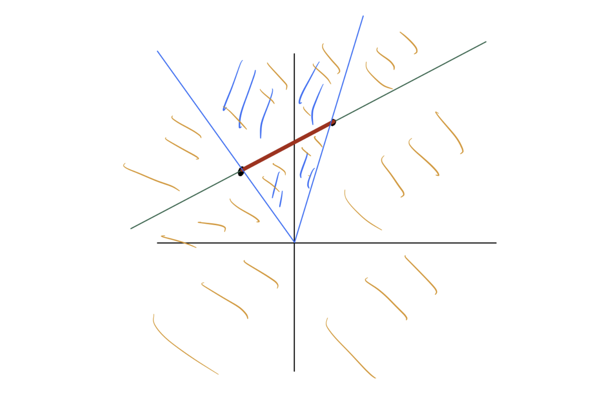

Introduction
본 포스트는 Mathematical and Numerical Optimization 강의의 첫 번째 시간으로, 최적화 이론의 기초가 되는 Convex Analysis(볼록 해석학), 그중에서도 Convex Set(볼록 집합)에 대해 다룹니다.
최적화 문제에서 ’Convexity(볼록성)’는 매우 중요한 성질입니다. 목적 함수와 제약 조건 영역이 볼록하다면, 국소 최적해(Local Optimum)가 곧 전역 최적해(Global Optimum)임이 보장되기 때문입니다. 이번 강의에서는 이러한 논의를 전개하기 위한 기초 블록인 Convex Set, Cone, Affine Subspace의 개념과 관계를 정의하고 다양한 예시를 살펴봅니다.
1. Convex Sets
1.1 Definition
직관적으로 Convex Set(볼록 집합)은 집합 내의 두 점을 이었을 때, 그 연결선이 집합 밖으로 나가지 않는 형태를 의미합니다. 수학적 정의는 다음과 같습니다.
Definition 1.1 (Convex Set)
집합 \(X \subseteq \mathbb{R}^d\)가 Convex하다는 것은, 임의의 \(u, v \in X\)와 임의의 \(\lambda \in [0, 1]\)에 대하여 다음이 성립함을 의미합니다. \[\lambda u + (1-\lambda)v \in X\]
여기서 \(\lambda u + (1-\lambda)v\)는 두 점 \(u\)와 \(v\)를 잇는 선분(Line segment) 위의 점을 나타냅니다. 즉, 집합 내의 임의의 두 점을 잇는 선분 전체가 해당 집합에 포함되어야 합니다.

1.2 Convex Combination & Convex Hull
단순히 두 점을 잇는 것을 넘어, 여러 점을 섞는 개념으로 확장해보겠습니다.
Definition 1.2 (Convex Combination)
\(v^1, \dots, v^k \in \mathbb{R}^d\)가 주어졌을 때, 다음 조건을 만족하는 선형 결합을 Convex Combination이라고 합니다. \[\sum_{i=1}^k \lambda_i v^i \quad \text{where} \quad \sum_{i=1}^k \lambda_i = 1, \quad \lambda_i \ge 0 \quad (\forall i=1,\dots,k)\]
두 점 \(u, v\)의 Convex Combination은 앞서 본 선분 \(\{\lambda u + (1-\lambda)v : 0 \le \lambda \le 1\}\)과 같습니다.
이제 어떤 집합 \(X\)를 포함하는 가장 작은 Convex Set을 정의할 수 있습니다. 이를 Convex Hull이라고 합니다.
Definition 1.3 (Convex Hull)
집합 \(X\)의 Convex Hull, \(\text{conv}(X)\)는 \(X\)에 속한 점들의 가능한 모든 Convex Combination의 집합입니다.
\[\text{conv}(X) = \left\{ \sum_{i=1}^n \lambda_i v^i : n \in \mathbb{N}, v^1, \dots, v^n \in X, \sum_{i=1}^n \lambda_i = 1, \lambda_i \ge 0 \right\}\]
중요한 성질은 원래 집합 \(X\)가 어떤 모양이든 상관없이, \(\text{conv}(X)\)는 항상 Convex Set이라는 점입니다. 기하학적으로는 집합 \(X\)를 포함하는 고무줄을 팽팽하게 당겼을 때 만들어지는 영역과 유사합니다.

2. Cones and Affine Subspaces
Convex Set과 유사하지만 제약 조건이 조금 다른 두 가지 중요한 기하학적 구조인 Cone(원뿔)과 Affine Subspace(아핀 부분공간)를 살펴봅니다.
2.1 Cones & Conic Hull
Cone은 원점을 기준으로 뻗어나가는 성질을 가집니다.
Definition 1.4 (Cone)
집합 \(C \subseteq \mathbb{R}^d\)가 Cone이라는 것은, 임의의 \(v \in C\)와 \(\alpha > 0\)에 대하여 \(\alpha v \in C\)가 성립함을 의미합니다.
만약 Cone인 집합 \(C\)가 Convex 성질까지 만족한다면, 이를 Convex Cone이라고 부릅니다. (주의: 모든 Cone이 Convex인 것은 아닙니다. 예를 들어, 두 개의 직선이 원점에서 교차하는 형태는 Cone이지만 Convex는 아닙니다.)
Convex Combination과 유사하게 Conic Combination을 정의할 수 있습니다.
Definition 1.5 (Conic Combination)
\(v^1, \dots, v^k \in \mathbb{R}^d\)의 Conic Combination은 계수들의 합이 1일 필요 없이, 비음수(Non-negative) 조건만 만족하는 선형 결합입니다. \[\sum_{i=1}^k \alpha_i v^i \quad \text{where} \quad \alpha_i \ge 0\]
Definition 1.6 (Conic Hull)
집합 \(X\)의 Conic Hull, \(\text{cone}(X)\)는 \(X\)의 원소들로 만들 수 있는 모든 Conic Combination의 집합입니다. \[\text{cone}(X) = \left\{ \sum_{i=1}^n \lambda_i v^i : n \in \mathbb{N}, v^1, \dots, v^n \in X, \lambda_i \ge 0 \right\}\]
\(\text{conv}(X)\)와 마찬가지로, \(\text{cone}(X)\)는 항상 Convex Cone이 됩니다.

2.2 Affine Subspaces & Affine Hull
Affine space는 Linear subspace(선형 부분공간)를 평행 이동한 공간입니다.
Definition 1.7 (Affine Combination)
\(v^1, \dots, v^k \in \mathbb{R}^d\)의 Affine Combination은 계수들의 합이 1이어야 하지만, 계수의 부호에는 제약이 없는(음수 가능) 선형 결합입니다. \[\sum_{i=1}^k \theta_i v^i \quad \text{where} \quad \sum_{i=1}^k \theta_i = 1\]
Convex Combination과의 차이점은 \(\theta_i\)가 음수가 될 수 있다는 점입니다. 이는 두 점을 잇는 ‘선분’을 넘어, 두 점을 지나는 무한한 ’직선’ 전체를 표현할 수 있게 합니다.
Definition 1.8 (Affine Hull)
집합 \(X\)의 Affine Hull은 \(X\)의 원소들로 만들 수 있는 모든 Affine Combination의 집합이며, Affine Subspace spanned by \(X\)라고도 합니다.
Linear Subspace와의 관계
강의 노트에서는 Linear Hull(Linear Subspace spanned by \(X\))과 Affine Hull을 비교합니다.
- Linear Hull: 모든 선형 결합 (계수 제약 없음). 원점을 반드시 포함.
- Affine Hull: 계수 합이 1인 선형 결합. 원점을 포함하지 않을 수 있음.
Theorem 1.9
Affine Subspace는 Linear Subspace의 평행 이동(Translation)입니다. 즉, Affine Subspace \(V \subseteq \mathbb{R}^d\)에 대해 적절한 행렬 \(A\)와 벡터 \(b\)가 존재하여 다음과 같이 표현할 수 있습니다. \[V = \{ x \in \mathbb{R}^d : Ax = b \}\]
2.3 Geometric Comparison (Summary)
2차원 평면상의 두 점 \(S = \{u, v\}\)가 있을 때, 각 개념이 생성하는 공간의 차이를 비교하면 다음과 같습니다.
- Convex Hull: 두 점을 잇는 선분 (빨간색)
- Affine Hull: 두 점을 지나는 직선 (초록색)
- Conic Hull: 원점과 두 점이 만드는 부채꼴(각) 영역 (파란색)
- Linear Hull: 원점과 두 점을 포함하는 전체 2차원 평면 (주황색)

3. Examples of Convex Sets
강의에서는 Convex Set의 다양한 구체적 예시들을 소개합니다. 이들은 최적화 문제의 제약 조건(Constraints)으로 자주 등장하므로 익숙해질 필요가 있습니다.
3.1 Basic Sets
- Empty set & Singletons: 공집합과 점 하나로 이루어진 집합(\(\{v\}\))은 Convex입니다.
- Norm ball: 중심 \(c\)와 반지름 \(r\)에 대해, 거리가 \(r\) 이하인 점들의 집합. \[\{ x \in \mathbb{R}^d : \| x - c \| \le r \}\]
- Ellipsoid (타원체): \(P\)가 Positive Definite 행렬일 때, \[\{ x \in \mathbb{R}^d : (x - c)^\top P (x - c) \le 1 \}\] 이는 Norm ball을 선형 변환하여 찌그러뜨린 형태로 볼 수 있습니다.
3.2 Hyperplanes & Half-spaces
선형 제약 조건의 기본 단위들입니다. 4. Hyperplane (초평면): \[\{ x \in \mathbb{R}^d : a^\top x = b \} \quad (a \in \mathbb{R}^d, b \in \mathbb{R})\] 이는 Affine set이자 동시에 Convex set입니다. 5. Half-space (반공간): Hyperplane을 기준으로 나뉜 공간의 한쪽 면입니다. \[\{ x \in \mathbb{R}^d : a^\top x \le b \}\]
3.3 Polyhedra
- Polyhedron (다면체): 유한한 개수의 Half-space들의 교집합(Intersection)입니다. \[\{ x \in \mathbb{R}^d : Ax \le b \}\] 여기서 \(Ax \le b\)는 \(a_k^\top x \le b_k\) (\(k=1,\dots,m\))의 연립 부등식을 의미합니다.
- Polytope: Bounded Polyhedron을 Polytope이라 부릅니다.
- 동치 정의: 유한한 벡터 집합의 Convex Hull과 같습니다.
3.4 Special Cones & Sets
- Simplex (심플렉스): \[\{ x \in \mathbb{R}^d : \mathbf{1}^\top x = 1, x \ge 0 \}\] 이는 단위 벡터들 \(e^1, \dots, e^d\)의 Convex Hull과 같습니다. (확률 분포를 나타낼 때 주로 사용됩니다.)
- Nonnegative Orthant: \(\mathbb{R}^d_+ = \{ x \in \mathbb{R}^d : x \ge 0 \}\)
- Positive Orthant: \(\mathbb{R}^d_{++} = \{ x \in \mathbb{R}^d : x > 0 \}\)
3.5 Examples of Convex Cones
Convex Cone 역시 Convex Set의 일종입니다.
- Norm Cone: (특히 Euclidean Norm일 때 Second-order cone이라 불림) \[\{ (x, t) \in \mathbb{R}^d \times \mathbb{R} : \|x\| \le t \}\] 아이스크림 콘 모양을 생각하면 됩니다.
- Positive Semidefinite (PSD) Cone: 고정된 차원의 모든 Positive Semidefinite 행렬들의 집합입니다.